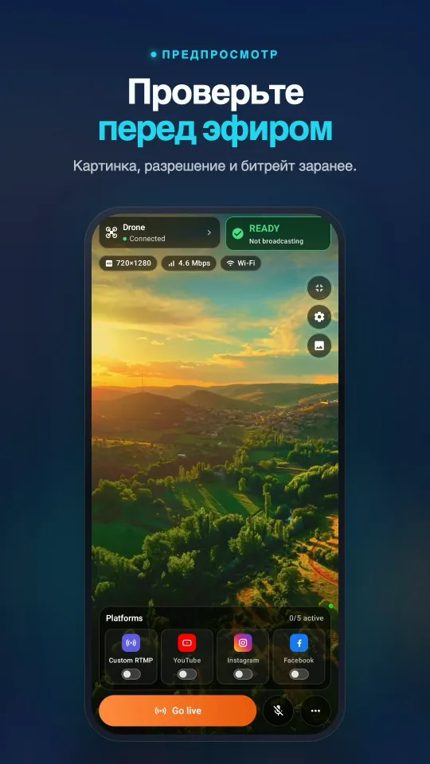
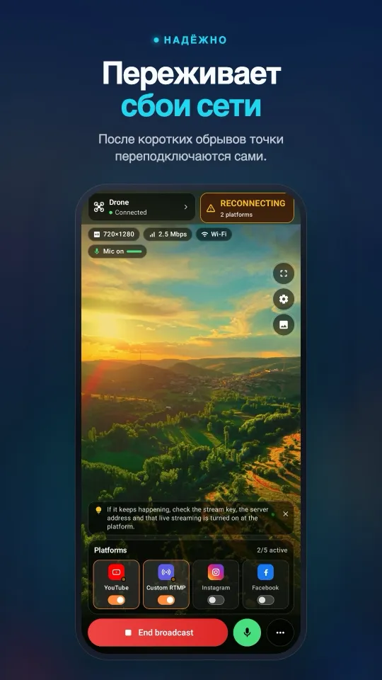
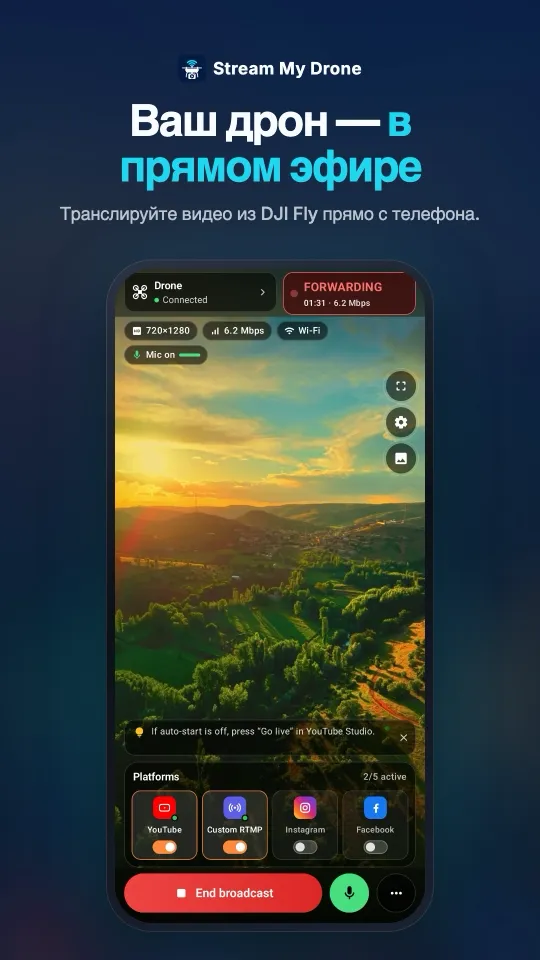
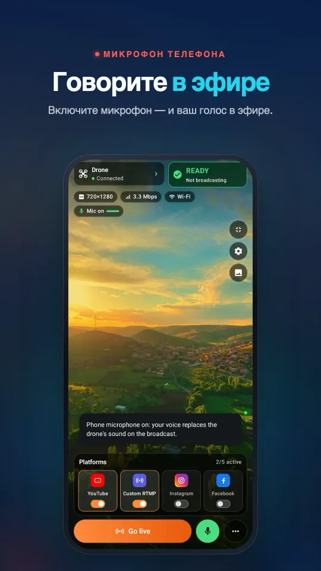
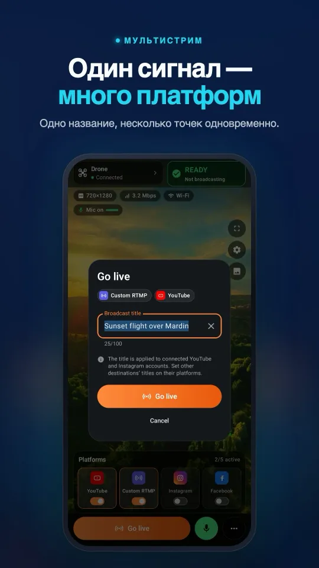

«Livestream error» в DJI Fly: причины и решение для каждой
Когда DJI Fly показывает «Livestream error» или «Starting livestream failed», причина почти всегда одна из четырёх: платформа требует RTMPS (Instagram, Facebook), адрес или ключ указаны неверно, аккаунту ещё нельзя выходить в эфир, или пульт не может достучаться до сервера. Самая быстрая проверка — сначала отправить поток в Stream My Drone на телефоне или компьютере в той же сети Wi-Fi. Если картинка пришла, DJI Fly в порядке, а проблема на стороне платформы.
DJI Fly требует микрофон на RC 2 и не запускает эфир? Решение без покупки микрофона →
Коротко
- DJI Fly отправляет только незашифрованный RTMP. Instagram и Facebook принимают только RTMPS, поэтому прямой эфир на них не идёт; поддержка DJI подтверждает это на форуме.
- RTMP-адрес — это URL сервера, «/» и ключ, без пробелов. Пропущенная косая черта или старый ключ — самая частая ошибка с YouTube.
- Аккаунту должно быть разрешено вести эфиры: новому каналу YouTube после включения трансляций нужно до 24 часов, а TikTok выдаёт ключ не всем.
- Первый DJI RC вообще не поддерживает трансляции. RC 2, RC Pro и DJI Smart Controller с DJI Fly 1.16.0 требуют микрофон.
- Если эфир запускается и обрывается, дело в сети: слабый мобильный сигнал, гостевой Wi-Fi или роутер, который переключается между 2,4 и 5 ГГц.
Исправьте ошибку трансляции DJI Fly за 6 проверок
- Проверьте формат адресаDJI Fly нужна одна строка: URL сервера, косая черта и ключ, без пробелов. Для YouTube это
rtmp://a.rtmp.youtube.com/live2/и ваш ключ. Скопируйте ключ заново: старый или сброшенный ключ не работает без внятного сообщения. - Проверьте, принимает ли платформа RTMPYouTube, Twitch и Kick принимают RTMP. Instagram и Facebook требуют зашифрованный RTMPS, который DJI Fly отправлять не умеет, поэтому прямой эфир туда всегда падает. Отправьте DJI Fly в приложение-приёмник, которое передаст поток по RTMPS.
- Проверьте, может ли аккаунт вести эфирНа YouTube включите трансляции в Творческой студии и подождите (в первый раз до 24 часов). DJI отмечает, что без разрешения на эфиры платформа не выдаёт рабочий ключ.
- Проверьте пультПервый DJI RC не поддерживает трансляции. На DJI RC 2, RC Pro и DJI Smart Controller приложение DJI Fly 1.16.0 и новее требует подключённый микрофон перед стартом.
- Проверьте подключениеДля прямого эфира пульту или телефону нужен интернет (4G/5G или Wi-Fi). С локальным приёмником оба устройства должны быть в одной сети, не в гостевом Wi-Fi.
- Проверьте с локальным приёмникомНаправьте DJI Fly на Stream My Drone на телефоне или компьютере (
rtmp://<адрес из приложения>:1935/drone). Если картинка появилась, DJI Fly работает; остаются платформа, ключ или аккаунт.
Ошибка, причина и решение коротко
| Что вы видите | Вероятная причина | Решение |
|---|---|---|
Сразу ошибка с адресом rtmps:// или «invalid RTMP URL» | DJI Fly отправляет только RTMP | Передать через приложение-приёмник с RTMPS |
| Сразу ошибка на YouTube | Неверный ключ, нет «/» или пробел в адресе | Заново скопировать URL и ключ и соединить через «/» |
| Ошибка на новом канале YouTube | Трансляции ещё не включены | Включить в Творческой студии и ждать до 24 часов |
| В Instagram сработало один раз, потом нет | Ключ Instagram одноразовый, и нужен RTMPS | Новый ключ на каждый эфир, передача по RTMPS |
| «No built-in mic in current device» | RC 2, RC Pro или Smart Controller с DJI Fly 1.16+ | Подключить микрофон или виртуальный Bluetooth-микрофон |
| В меню нет RTMP | Первый DJI RC или DJI Fly старше 1.4.12 | Взять поддерживаемый пульт, обновить DJI Fly |
| Запускается и обрывается через секунды | Слабая отдача, гостевой Wi-Fi или смена диапазона | Использовать 5 ГГц или точку доступа телефона, подойти ближе |
| Отсчёт закончился, на платформе пусто | Не нажата кнопка «Начать эфир» (Instagram, Facebook) или неверный ключ | Нажать «Начать эфир» на платформе, проверить ключ |
Как это выглядит на телефонеОт подключения DJI Fly до эфира на нескольких платформах — всё на одном экране.




Почему локальная проверка быстрее всего находит проблему
Трансляция из DJI Fly проходит через три звена: пульт, сеть и платформу. Локальный приёмник делит проблему пополам. Stream My Drone показывает RTMP-адрес для DJI Fly и через несколько секунд после Start Livestream — картинку с разрешением и битрейтом.
- Картинка пришла: DJI Fly, пульт и локальная сеть работают. Добавьте платформу в приложении — оно само справится с RTMPS, новым ключом Instagram и переподключением.
- Ничего не пришло: пульт не видит приёмник. Проверьте, что оба в одном Wi-Fi или на одной точке доступа и что адрес совпадает полностью, включая
:1935/drone. - Картинка приходит и пропадает каждые несколько секунд: виноват Wi-Fi. Роутеры с одним именем сети для 2,4 и 5 ГГц постоянно переключают диапазон; точка доступа телефона этого не делает.
Меню по шагам: настройка RTMP в DJI Fly. Instagram: почему DJI Fly не транслирует в Instagram.
Почему эфир только 720p или битрейт не меняется
Это ограничения, а не ошибки. По данным DJI, DJI RC 2 и DJI RC Pro 2 из-за железа транслируют только 720p, а DJI RC Pro — только 720p после DJI Fly 1.18.0. С телефоном на RC-N1, RC-N2 или RC-N3 можно выбрать 1080p или 720p. Битрейт задаёт частота кадров передачи: 5 или 3 Мбит/с на Android, 2 или 1 Мбит/с на iOS, вручную его не поменять.
Нет звука или звук трещит
- Эфир без звука: DJI Fly отправляет микрофон пульта или телефона. Пульт без микрофона или виртуальный микрофон передают тишину.
- Треск или искажения: попробуйте другой микрофон или другой порт USB-C. Если не помогает, замените звук DJI Fly: кнопка микрофона телефона в Stream My Drone отправит ваш голос на все платформы.
Источники
Формат адреса, права аккаунта, микрофон, разрешение и битрейт: DJI Fly App Livestream Operation Guides. RTMPS и Facebook: форум DJI: проблема с эфиром в Facebook и ошибка эфира на YouTube или Facebook. «Starting livestream failed»: DJI Mobile SDK, issue 1120. Проверено 8 ноября 2026 года.
Читайте также: решение проблемы с микрофоном RC 2, какие дроны DJI умеют транслировать и полное руководство по трансляции с дрона.
Вопросы
Почему DJI Fly пишет «Livestream error»?
Чаще всего платформа требует RTMPS (Instagram, Facebook), адрес или ключ неверны, аккаунту ещё нельзя вести эфир или у пульта нет связи с сервером. Сначала проверьте с локальным приёмником, какая сторона не работает.
Может ли DJI Fly транслировать прямо в Facebook или Instagram?
Нет. Обе платформы принимают только зашифрованный RTMPS, а DJI Fly отправляет незашифрованный RTMP. Отправьте поток DJI Fly в Stream My Drone на телефоне или компьютере — он передаст его по RTMPS.
Какой RTMP-адрес YouTube указывать в DJI Fly?
rtmp://a.rtmp.youtube.com/live2/ и ваш ключ из Творческой студии YouTube, без пробелов. В руководстве DJI адрес сервера и ключ соединяются косой чертой.
Почему трансляция с моего дрона DJI обрывается через несколько секунд?
Обычно из-за сети: слабый мобильный сигнал, гостевой Wi-Fi или роутер, постоянно переключающийся между 2,4 и 5 ГГц. Используйте точку доступа телефона или Wi-Fi 5 ГГц и держите устройства рядом.
Можно ли вести трансляцию с первым DJI RC?
Нет. DJI указывает, что трансляции с DJI RC не поддерживаются. Они работают с RC-N1, RC-N2 и RC-N3 с телефоном, а также с DJI RC 2, RC Pro, RC Pro 2 и Smart Controller.
Можно ли поднять битрейт трансляции в DJI Fly?
Нет. DJI привязывает его к частоте кадров передачи: 5 или 3 Мбит/с на Android и 2 или 1 Мбит/с на iOS. Кроме того, RC 2 и RC Pro 2 транслируют только 720p.
Запускайте трансляцию с дрона прямо с телефона
Stream My Drone для Android и iPhone принимает картинку DJI Fly и отправляет её на YouTube, Instagram, Facebook, TikTok, Twitch, Kick или ваш собственный сервер, сразу на несколько. Разовая покупка, без подписки.
Бесплатное приложение для Mac и Windows →Как работает приложение →

Другие инструкции
Как сделать прямую трансляцию с дрона (пошагово, 2026)
Как транслировать с дрона на YouTube, Instagram, TikTok или Facebook: что нужно, 4 способа, настройка RTMP в DJI Fly за 5 шагов, скорость интернета и решение проблем.
Какие дроны DJI умеют вести трансляции? Полный список моделей и пультов
Все дроны DJI, которые ведут трансляции в DJI Fly, от Mini 2 и Mini 4K до Mavic 4 Pro и Avata 360, какие пульты подходят и ограничения по 720p и микрофону.
Как транслировать свадьбу с дрона
Трансляция свадьбы с дрона DJI для гостей, которые не смогли приехать: план, список оборудования, приватная ссылка YouTube, схема с телефоном или ноутбуком и правила безопасности.
DJI RC 2 не запускает трансляцию без микрофона? Как исправить “No built-in mic in current device”
DJI Fly 1.16 не запускает трансляцию с RC 2 без микрофона. Почему так, что помогает (USB-C микрофон, AirPods) и решение без лишних устройств с Android-телефоном.
Как вести трансляцию с DJI Flip
Прямая трансляция с DJI Flip через RC 2, RC-N3 или RC-N2: настройка RTMP на телефоне и компьютере, управление с ладони, вертикальный кадр и проверка платформ.
Как вести трансляцию с DJI Lito X1
Прямая трансляция с DJI Lito X1 через RC 2, RC-N3 или RC-N2: настройка RTMP в DJI Fly, схемы с телефоном и компьютером, подключение платформ и решение проблем.
Как вести трансляцию с DJI Lito 1
Как вести прямую трансляцию с DJI Lito 1 через RC-N3, RC-N2 или RC 2: настройка RTMP в DJI Fly, приём на телефоне и компьютере, платформы и решение проблем.
Как вести трансляцию с DJI Air 3S
Прямая трансляция с DJI Air 3S на YouTube, в Instagram или Facebook: выбор пульта, RTMP из DJI Fly на телефон или компьютер и проверка исходящей картинки.
Как вести трансляцию с DJI Air 3
Как вести прямую трансляцию с DJI Air 3 на YouTube, в Instagram или Facebook: выбор пульта, RTMP из DJI Fly на телефон или компьютер и проверка исходящей картинки.
Как вести трансляцию с DJI Mavic 4 Pro
Трансляция с DJI Mavic 4 Pro через RC 2 или RC Pro 2 на телефон или компьютер: RTMP в DJI Fly, разница в микрофонах, предел 720p и настройка платформ.
Как вести трансляцию с DJI Mavic 3, Classic или Pro
Прямая трансляция с DJI Mavic 3, Classic или Pro через RC-N1 или RC Pro: почему DJI RC не умеет стримить, приём на телефоне, RTMP на компьютере и пределы качества.
Как вести трансляцию с DJI Mini 3 Pro
Прямая трансляция с DJI Mini 3 Pro через RC-N1, DJI Fly на телефоне и Stream My Drone на компьютере. Почему с оригинальным DJI RC эта схема RTMP не работает.
Как вести трансляцию с DJI Mini 3
Как настроить прямую трансляцию с DJI Mini 3 через RC-N1 и DJI Fly в Stream My Drone на компьютере: ограничения DJI RC, изображение 720p и публикация на платформах.
Как вести прямую трансляцию с DJI Mini 5 Pro
Прямая трансляция с DJI Mini 5 Pro через RC 2 или RC-N3: настройка RTMP в DJI Fly, приём на телефоне или компьютере и эфир на YouTube, Instagram или Facebook.
Как вести прямую трансляцию с DJI Mini 4 Pro
Прямая трансляция с DJI Mini 4 Pro через RC 2 или RC-N2: настройка на телефоне и компьютере, RTMP в DJI Fly, требование микрофона и проверка эфира на платформе.
Находите и считайте животных в прямом эфире с дрона DJI
Stream My Drone находит коз, овец, коров, лошадей, ослов и птицу на живой картинке с дрона, отмечает их в трансляции и считает — всё на вашем компьютере.
Трансляция по RTMP в DJI Fly: полная настройка
Как настроить RTMP-трансляцию в DJI Fly: где найти настройку, какой адрес ввести, как связать пульт и компьютер в одной сети и что делать, если не работает.
Почему DJI Fly не может транслировать в Instagram (и как это исправить)
В DJI Fly нет Instagram, а его RTMP-клиент не умеет в зашифрованный RTMPS, который требует Instagram. Объясняем причину и как всё же выйти в эфир с дрона DJI.
Превратите дрон DJI в веб-камеру вашего компьютера
Превратите дрон DJI в веб-камеру для TikTok LIVE Studio, OBS, Zoom, Google Meet или Teams с виртуальной камерой Stream My Drone. Настройка, идеи и решения проблем.
Как вести прямую трансляцию с DJI Neo
Как вести прямую трансляцию с DJI Neo: какой режим управления подходит (телефон, RC-N3, очки), RTMP в DJI Fly и эфир в Instagram, TikTok или YouTube через Stream My Drone.
Как вести прямую трансляцию с DJI Avata 2
Как транслировать FPV-видео с DJI Avata 2: передайте картинку Goggles 3 в DJI Fly на телефоне, отправьте её по RTMP и выходите в эфир Instagram, TikTok или YouTube.
Прямая трансляция с камеры DJI Osmo в Instagram, TikTok и не только
DJI Mimo умеет транслировать с камер Osmo Action, Osmo Pocket и Osmo 360 по RTMP. Отправьте поток в Stream My Drone и выходите в эфир Instagram, TikTok и YouTube сразу.
Как транслировать с Osmo Pocket 3 в Instagram и TikTok
Как вести прямую трансляцию с DJI Osmo Pocket 3 по RTMP из DJI Mimo сразу в Instagram, TikTok и YouTube и использовать камеру как беспроводную веб-камеру со Stream My Drone.
Как транслировать с экшн-камеры Osmo Action в Instagram и TikTok
Прямая трансляция с DJI Osmo Action 6, 5 Pro, 4 или 3 по RTMP из DJI Mimo сразу в Instagram, TikTok, YouTube и Twitch со Stream My Drone. Настройка и параметры.
Как выйти в прямой эфир TikTok с дрона DJI
Прямая трансляция с дрона DJI в TikTok из DJI Fly: с ключом трансляции TikTok или без него через TikTok LIVE Studio и виртуальную камеру. Настройки и решения проблем.
Как выйти в прямой эфир Instagram с дрона DJI
Прямой эфир в Instagram с дрона DJI: получите URL трансляции и ключ на instagram.com, отправьте RTMP-поток DJI Fly через Stream My Drone и нажмите «Начать эфир».
Как вести прямую трансляцию с дрона DJI на YouTube
Прямая трансляция с дрона DJI на YouTube: включите трансляции, скопируйте ключ в YouTube Studio и отправьте RTMP из DJI Fly через Stream My Drone. Настройки и советы.
Как выйти в прямой эфир Facebook с дрона DJI
Прямая трансляция с дрона DJI в Facebook: возьмите URL сервера RTMPS и ключ трансляции в Live Producer, отправьте поток DJI Fly через Stream My Drone и выходите в эфир.
Как стримить с дрона DJI на Twitch
Стрим с дрона DJI на Twitch: скопируйте ключ трансляции в панели автора, добавьте Twitch как своё RTMP-направление в Stream My Drone и выходите в прямой эфир.
Как стримить с дрона DJI на Kick
Прямая трансляция с дрона DJI на Kick: скопируйте URL трансляции и ключ в панели Kick, добавьте их как своё RTMP-направление в Stream My Drone и выходите в эфир.
Трансляция с дрона DJI сразу на несколько платформ
Отправляйте одну трансляцию с дрона DJI в TikTok, Instagram, YouTube, Facebook, Twitch и Kick одновременно со Stream My Drone — бесплатно, локально, без сервиса рестрима.
Stream My Drone или Restream: что выбрать для вашего дрона?
Трансляция с дрона DJI на несколько платформ: облачный Restream или Stream My Drone на своём компьютере? Цена, водяной знак, Instagram, вертикальное видео и кто когда лучше.
Трансляция с дрона DJI без настройки NGINX и OBS
Обычно DJI Fly заводят в OBS через RTMP-сервер NGINX, конфигурационный файл и медиаисточник. Рассказываем, что включает такая схема и как обойтись одним приложением.